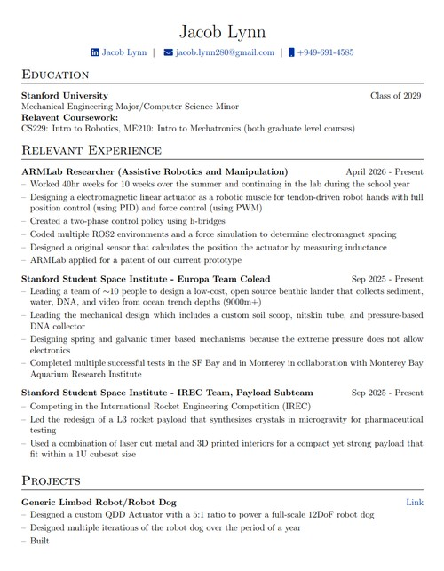

Hi! I'm Jacob Lynn and I am a sophomore (Class of 2029) studying mechanical engineering with a minor in comp sci at Stanford University. I also do research in the Stanford ARMLab where I work on electromagnetic robotic muscles for tendon-driven robot hands! I'm interested in robotics and space and I've always loved to create. My dream job would someday be to work on space robotics :). This website is meant to serve as a portfolio of what I have made in college so far! I hope you look around, and please reach out to me if you have any questions or thoughts: jnlynn@stanford.edu

resume.pdf